Система нормативных документов в строительстве
СТРОИТЕЛЬНЫЕ НОРМЫ И ПРАВИЛА
РОССИЙСКОЙ ФЕДЕРАЦИИ
ДОСТУПНОСТЬ ЗДАНИЙ И СООРУЖЕНИЙ
ДЛЯ МАЛОМОБИЛЬНЫХ ГРУПП НАСЕЛЕНИЯ
СНиП 35-01-2001
ГОСУДАРСТВЕННЫЙ КОМИТЕТ РОССИЙСКОЙ ФЕДЕРАЦИИ
ПО СТРОИТЕЛЬСТВУ И ЖИЛИЩНО-КОММУНАЛЬНОМУ КОМПЛЕКСУ
(ГОССТРОЙ РОССИИ)
Москва
2001
ПРЕДИСЛОВИЕ
1 РАЗРАБОТАНЫ ГУП «Научно-проектный институт учебно-воспитательных, торгово-бытовых и досуговых зданий» (Институт общественных зданий) Госстроя России - ведущая организация, ЗАО «Архитектурное проектно-исследовательское объединение - Центр» (АПИО-Центр), ЗАО «ЦНИИЭП им. Б.С. Мезенцева», Академией Государственной противопожарной службы МВД России, Московским государственным строительным университетом, ОАО «МосОтис»
2 ВНЕСЕНЫ Министерством труда и социального развития Российской Федерации.
3 ПРЕДСТАВЛЕНЫ Управлением архитектуры и проектных работ и Управлением стандартизации, технического нормирования и сертификации Госстроя России
4 ПРИНЯТЫ и ВВЕДЕНЫ В ДЕЙСТВИЕ с 1 сентября 2001 г. постановлением Госстроя России от 16 июля 2001 г. № 73
5 ВЗАМЕН ВСН 62-91* (кроме требований к специализированным зданиям)
6 ВВЕДЕНЫ впервые
СОДЕРЖАНИЕ
|
4 Особые требования к среде жизнедеятельности маломобильных групп населения |
||
|
Термины и определения |
||
|
Расчет числа лифтов, необходимых для спасения инвалидов из зон безопасности. |
||
|
Материалы к расчету уровня пожарной безопасности маломобильных групп населения |
||
ВВЕДЕНИЕ
Настоящий нормативный документ разработан по заказу Минтруда России в рамках федеральной целевой программы «Социальная поддержка инвалидов на 2000-2005 годы». Он предназначен для проектирования, строительства и реконструкции зданий и сооружений, доступных всем маломобильным группам населения. Нормативный документ выполнен в соответствии с положениями статьи 15 (пункт 1) и статьи 17 Градостроительного кодекса Российской Федерации (Собрание законодательства Российской Федерации, 1998, № 19, ст. 2069), статьи 15 Федерального закона «О социальной защите инвалидов в Российской Федерации» от 24 ноября 1995 г. № 181-ФЗ (Собрание законодательства Российской федерации, 1995, № 48, ст. 4563) (с изменениями и дополнениями) и Федерального закона «О защите прав потребителей» от 07.02.92 г. № 2300-1 (Ведомости Совета народных депутатов РСФСР и Верховного Совета РСФСР, 1992 г., № 15, ст. 766) с изменениями в редакции Федерального закона от 09.01.96 г. № 2-ФЗ (Собрание законодательства Российской Федерации, 1996, № 3, ст. 140).
СНиП 35-01-2001 является основным документом 35-го комплекса Системы нормативных документов в строительстве «Обеспечение доступной среды жизнедеятельности для инвалидов и других маломобильных групп населения». Он разработан в соответствии с требованиями СНиП 10-01-94 на базе действующих нормативов по доступности зданий и сооружений для инвалидов, с учетом зарубежных норм, стандартов и рекомендаций и не содержит противоречий положениям СНиП 2.08.02-89* (раздел 4), СНиП 2.08.01-89*, СНиП 31-03-2001 и СНиП 2.09.04-87*.
К СНиП 35-01-2001 разработаны следующие своды правил: СП 35-101-2001 «Проектирование зданий и сооружений с учетом доступности для маломобильных групп населения. Общие положения»; СП 35-102-2001 «Жилая среда с планировочными элементами, доступными инвалидам»; СП 35-103-2001 «Общественные здания и сооружения, доступные маломобильным посетителям»; СП 35-104-2001 «Здания и помещения с местами труда для инвалидов».
Работа выполнена авторским коллективом: ГУП «Институт общественных зданий» (руководитель темы, научный редактор, ответственный исполнитель - канд. архитектуры А. М. Гарнец, ответственный исполнитель Н.П. Малиночка); ЗАО «АПИО-Центр»; ЗАО «ЦНИИЭП им. Б.С. Мезенцева» (канд. архитектуры Н.Б. Мезенцева); Академия Государственной противопожарной службы МВД России (канд. техн. наук Е.Т. Шурин, А.В. Апаков, Д.А. Самошин); ФНТЦ «Стройсертификация» (канд. архитектуры Л.А. Викторова); Московский государственный строительный университет (д-р. техн. наук В.В. Холщевников); Главгосэкспертиза России (канд. архитектуры С.В. Кролевец); ОАО «МосОтис» (С.М. Ройтбурд); Ю.В. Колосов при участии Всероссийского общества инвалидов (А.В. Ломакин-Румянцев).
Внесены: Департаментом по вопросам реабилитации и социальной интеграции инвалидов Минтруда России (И.В. Лебедев, А.Е. Лысенко).
Представлены к утверждению: Управлением стандартизации, технического нормирования и сертификации Госстроя России (В.В. Тишенко, Н.Н. Поляков, Л.А. Викторова), Управлением архитектуры и проектных работ Госстроя России (Э.А. Шевченко, В.Г. Хахулин, Н.Н. Якимова).
Согласованы: Государственной противопожарной службой МВД России, Госсанэпиднадзором Минздрава России, Главгосэкспертизой России, Всероссийским обществом инвалидов, Всероссийским обществом слепых и Всероссийским обществом глухих.
СТРОИТЕЛЬНЫЕ НОРМЫ И ПРАВИЛА РОССИЙСКОЙ ФЕДЕРАЦИИ
ДОСТУПНОСТЬ ЗДАНИЙ И
СООРУЖЕНИЙ
ДЛЯ МАЛОМОБИЛЬНЫХ ГРУПП НАСЕЛЕНИЯ
ACCESSIBILITY
OF BUILDINGS AND STRUCTURES
FOR PHYSICALLY HANDICAPPED PERSONS
Дата введения 2001-09-01
1 ОБЩИЕ ПОЛОЖЕНИЯ
1.1 При новом проектировании и реконструкции общественных, жилых и промышленных зданий следует, как правило, предусматривать для инвалидов и граждан других маломобильных групп населения условия жизнедеятельности, равные с остальными категориями населения.
Перечень объектов, доступных для инвалидов и других маломобильных групп населения (далее - МГН), расчетное число и категория инвалидов, а также группа мобильности МГН (приложение В, табл. В.1) устанавливаются заданием на проектирование. Оно утверждается в установленном порядке по согласованию с территориальным органом социальной защиты населения и с учетом мнения общественных объединений инвалидов.
1.2 Требования настоящего документа распространяются только на функционально-планировочные элементы зданий и сооружений, их участков или отдельные помещения, доступные для МГН: входные узлы, коммуникации, пути эвакуации, помещения (зоны) проживания, обслуживания и места приложения труда, а также их информационное и инженерное обустройство.
Необходимость и степень (формы) адаптации к требованиям МГН зданий, имеющих историческую, художественную или архитектурную ценность, следует согласовывать с органом по охране и использованию памятников истории и культуры соответствующего уровня.
1.3 Требования настоящих норм и правил не распространяются на здания специализированных учреждений для постоянного и временного проживания инвалидов и людей старшей возрастной группы на условиях опеки, стационары лечебных учреждений и аналогичные учреждения, предназначенные для обслуживания и постоянного пребывания данных категорий населения, а также на жилые дома для одной семьи.
1.4 Проектные решения объектов, доступных для МГН, должны обеспечивать:
• досягаемость мест целевого посещения и беспрепятственность перемещения внутри зданий и сооружений;
• безопасность путей движения (в том числе эвакуационных), а также мест проживания, обслуживания и приложения труда;
• своевременное получение МГН полноценной и качественной информации, позволяющей ориентироваться в пространстве, использовать оборудование (в том числе для самообслуживания), получать услуги, участвовать в трудовом и учебном процессе и т.д.;
• удобство и комфорт среды жизнедеятельности.
1.5 Проектные решения объектов, доступных для инвалидов, не должны ограничивать условия жизнедеятельности других групп населения, а также эффективность эксплуатации зданий.
С этой целью рекомендуется, как правило, проектировать адаптируемые к потребностям инвалидов универсальные элементы зданий и сооружений, используемые всеми группами населения. Необходимость применения специализированных элементов, учитывающих специфические потребности инвалидов, устанавливается заданием на проектирование.
1.6 При проектировании, оборудовании и оснащении зданий и сооружений, доступных для МГН, должны выполняться положения Федерального закона «О санитарно-эпидемиологическом благополучии населения» от 30 марта 1999 г. № 52-ФЗ (Собрание законодательства Российской Федерации, 1999, № 14, ст. 1650).
1.7 Используемые в тексте термины и их определения приведены в приложении А.
2 НОРМАТИВНЫЕ ССЫЛКИ
В настоящих нормах и правилах использованы ссылки на следующие документы:
СНиП 10-01-94 «Система нормативных документов в строительстве. Основные положения».
СНиП 21 -01-97* «Пожарная безопасность зданий и сооружений».
СНиП 23-05-95 «Естественное и искусственное освещение».
СНиП 2.04.05-91* «Отопление, вентиляция и кондиционирование».
СНиП 2.08.01-89* «Жилые здания».
СНиП 2.08.02-89* «Общественные здания и сооружения», раздел 4 «Требования доступности для маломобильных посетителей».
СНиП 31-03-2001 «Производственные здания».
СНиП 2.09.04-87* «Административные и бытовые здания».
ГОСТ Р 50602-93 «Кресла-коляски. Максимальные габаритные размеры».
ГОСТ Р 51261-99 «Устройства опорные стационарные реабилитационные. Типы и технические требования».
ГОСТ Р 51630-2000 «Платформы подъемные с вертикальным и наклонным перемещением для инвалидов. Технические требования доступности».
ГОСТ Р 51631-2000 «Лифты пассажирские. Технические требования доступности для инвалидов».
ГОСТ Р 51671-2000 «Средства связи и информации технические общего пользования, доступные для инвалидов. Классификация. Требования доступности и безопасности».
ГОСТ 12.1.004-91 «ССБТ. Пожарная безопасность. Общие требования».
НПБ 104-95 «Проектирование систем оповещения людей о пожаре в зданиях и сооружениях».
НПБ 250-97 «Лифты для транспортирования пожарных подразделений в зданиях и сооружениях. Общие технические требования».
3 ОБЩИЕ ТРЕБОВАНИЯ К ЗДАНИЯМ,
СООРУЖЕНИЯМ И ИХ УЧАСТКАМ
Участки и территории
3.1 В проектах должны быть предусмотрены условия беспрепятственного и удобного передвижения МГН по участку к зданию или по территории предприятия, комплекса сооружений с учетом требований градостроительных норм. Система средств информационной поддержки должна быть обеспечена на всех путях движения, доступных для МГН на все время эксплуатации.
3.2 Транспортные проезды на участке и пешеходные дороги на пути к объектам, посещаемым инвалидами, допускается совмещать при соблюдении градостроительных требований к параметрам путей движения.
3.3 Ширина пути движения на участке при встречном движении инвалидов на креслах-колясках должна быть не менее 1,8 м с учетом габаритных размеров кресел-колясок по ГОСТ Р 50602.
Продольный уклон пути движения, по которому возможен проезд инвалидов на креслах-колясках, как правило, не должен превышать 5 %. При устройстве съездов с тротуара около здания и в затесненных местах допускается увеличивать продольный уклон до 10 % на протяжении не более 10 м.
Поперечный уклон пути движения следует принимать в пределах 1-2 %.
3.4 Высоту бордюров по краям пешеходных путей на участке рекомендуется принимать не менее 0,05 м.
Высота бортового камня в местах пересечения тротуаров с проезжей частью, а также перепад высот бордюров, бортовых камней вдоль эксплуатируемых газонов и озелененных площадок, примыкающих к путям пешеходного движения, не должны превышать 0,04 м.
3.5 При наличии на территории или участке подземных и надземных переходов их следует, как правило, оборудовать пандусами или подъемными устройствами, если нельзя организовать для МГН наземный проход.
3.6 Тактильные средства, выполняющие предупредительную функцию на покрытии пешеходных путей на участке, следует размещать не менее чем за 0,8 м до объекта информации, начала опасного участка, изменения направления движения, входа и т.п.
3.7 Для покрытий пешеходных дорожек, тротуаров и пандусов не допускается применение насыпных или крупноструктурных материалов, препятствующих передвижению МГН на креслах-колясках или с костылями. Покрытие из бетонных плит должно быть ровным, а толщина швов между плитами - не более 0,015 м.
3.8 На путях движения МГН не допускается применять непрозрачные калитки на навесных петлях двустороннего действия, калитки с вращающимися полотнами, а также турникеты.
3.9 Для открытых лестниц на перепадах рельефа рекомендуется принимать ширину проступей не менее 0,4 м, высоту подъемов ступеней - не более 0,12 м. Все ступени наружных лестниц в пределах одного марша должны быть одинаковыми по форме в плане, по размерам ширины проступи и высоты подъема ступеней. Поперечный уклон наружных ступеней должен быть в пределах 1-2 %.
Лестницы должны дублироваться пандусами, а при необходимости - другими средствами подъема.
3.10 Устройства и оборудование (почтовые ящики, укрытия таксофонов, информационные щиты и т.п.), размещаемые на стенах зданий, сооружений или на отдельных конструкциях, а также выступающие элементы и части зданий и сооружений не должны сокращать нормируемое пространство для прохода, а также проезда и маневрирования кресла-коляски.
Объекты, нижняя кромка которых расположена на высоте от 0,7 до 2,1 мот уровня пешеходного пути, не должны выступать за плоскость вертикальной конструкции более чем на 0,1 м, а при их размещении на отдельно стоящей опоре - не более 0,3 м. При увеличении выступающих размеров пространство под этими объектами необходимо выделять бордюрным камнем, бортиком высотой не менее 0,05 м либо ограждениями высотой не менее 0,7 м и т.п.
Таксофоны и другое специализированное оборудование для людей с недостатками зрения должны устанавливаться на горизонтальной плоскости с применением рифленого покрытия или на отдельных плитах высотой до 0,04 м, край которых должен находиться от установленного оборудования на расстоянии 0,7 - 0,8 м.
Формы и края подвесного оборудования должны быть скруглены.
3.11 Вход на территорию или участок следует оборудовать доступными для инвалидов элементами информации об объекте.
Вход на участок жилого одноквартирного дома рекомендуется оборудовать контрольно-охранными приборами или устройствами сигнализации, передающими информацию в жилище для людей с недостатками зрения и дефектами слуха.
3.12 На открытых индивидуальных автостоянках около учреждений обслуживания следует выделять не менее 10 % мест (но не менее одного места) для транспорта инвалидов. Эти места должны обозначаться знаками, принятыми в международной практике.
Места для личного автотранспорта инвалидов желательно размещать вблизи входа, доступного для инвалидов, но не далее 50 м, а при жилых зданиях - не далее 100м. Ширина зоны для парковки автомобиля инвалида должна быть не менее 3,5 м.
Площадки для остановки специализированных средств общественного транспорта, перевозящих только инвалидов, следует предусматривать на расстоянии не далее 100 м от входов в общественные здания, доступные для МГН.
Входы и пути движения
3.13 В здании должен быть как минимум один вход, приспособленный для МГН, с поверхности земли и из каждого доступного для МГН подземного или надземного перехода, соединенного с этим зданием.
3.14 Наружные лестницы и пандусы должны иметь поручни с учетом технических требований к опорным стационарным устройствам по ГОСТ Р 51261.
При ширине лестниц на основных подходах к зданию 2,5 м и более следует дополнительно предусматривать разделительные поручни.
Входная площадка при входах, доступных МГН, должна иметь: навес, водоотвод, а в зависимости от местных климатических условий - подогрев, что устанавливается заданием на проектирование.
Поверхности покрытий входных площадок и тамбуров должны быть твердыми, не допускать скольжения при намокании и иметь поперечный уклон в пределах 1-2 %.
3.15 Глубина тамбуров и тамбур-шлюзов должна быть не менее 1,8 м, а в жилых зданиях - не менее 1,5 м при ширине не менее 2,2 м.
Дренажные и водосборные решетки, устанавливаемые в полу тамбуров или входных площадок, должны устанавливаться заподлицо с поверхностью покрытия пола. Ширина просветов их ячеек не должна превышать 0,015 м. Предпочтительно применение решеток с ромбовидными или квадратными ячейками.
3.16 При наличии контроля на входе следует предусматривать контрольные устройства, приспособленные для пропуска тех категорий инвалидов, для которых будет доступен проектируемый объект.
3.17 Помещения, где могут находиться инвалиды на креслах-колясках, следует, как правило, размещать на уровне входа, ближайшего к поверхности земли. При ином размещении помещений по высоте здания, кроме лестниц, следует предусматривать пандусы, подъемные платформы, лифты или другие приспособления для перемещения инвалидов.
3.18 Пути движения МГН внутри здания следует проектировать в соответствии с нормативными требованиями к путям эвакуации людей из здания.
Ширина пути движения (в коридорах, помещениях, галереях и т.п.) в чистоте должна быть не менее:
|
при движении кресла-коляски в одном направлении |
1,5 м, |
|
при встречном движении |
1,8 м. |
Ширину прохода в помещении с оборудованием и мебелью следует принимать не менее 1,2 м.
Ширина балконов и лоджий должна быть, как правило, не менее 1,4 м в свету.
Ширину коридора или перехода в другое здание следует принимать не менее 2,0 м.
Подходы к различному оборудованию и мебели должны быть не менее 0,9 м, а при необходимости поворота кресла-коляски на 90° - не менее 1,2 м.
3.19 Диаметр зоны для самостоятельного разворота на 90 - 180° инвалида на кресле-коляске следует принимать не менее 1,4 м.
Около столов, прилавков и других мест обслуживания, у настенных приборов, аппаратов и устройств для инвалидов следует предусматривать свободное пространство размерами в плане не менее 0,9 ´ 1,5 м.
Глубина пространства для маневрирования кресла-коляски перед дверью при открывании «от себя» должна быть не менее 1,2 м, а при открывании «к себе» - не менее 1,5 м при ширине не менее 1,5 м.
3.20 Конструктивные элементы внутри зданий и устройства, размещаемые в габаритах путей движения на стенах и других вертикальных поверхностях, должны иметь закругленные края, а также не должны выступать более чем на 0,1 м на высоте от 0,7 до 2,0 м от уровня пола. При размещении устройств, указателей на отдельно стоящей опоре они не должны выступать более чем на 0,3 м.
Под маршем открытой лестницы и другими нависающими элементами внутри здания, имеющими размер в свету по высоте менее 1,9 м, следует устанавливать барьеры, ограждения и т.п.
3.21 Участки пола на путях движения на расстоянии 0,6 м перед дверными проемами и входами на лестницы и пандусы, а также перед поворотом коммуникационных путей должны иметь предупредительную рифленую и/или контрастно окрашенную поверхность, допускается предусматривать световые маячки.
3.22 В помещениях, доступных МГН, не допускается применять ворсовые ковры с толщиной покрытия (с учетом высоты ворса) - более 0,013 м.
Ковровые покрытия на путях движения должны быть плотно закреплены, особенно на стыках полотен и по границе разнородных покрытий.
3.23 Ширина дверных и открытых проемов в стене, а также выходов из помещений и из коридоров на лестничную клетку должна быть не менее 0,9 м. При глубине откоса открытого проема более 1,0 м ширину проема следует принимать по ширине коммуникационного прохода, но не менее 1,2 м.
Дверные проемы, как правило, не должны иметь порогов и перепадов высот пола. При необходимости устройства порогов их высота или перепад высот не должен превышать 0,025 м.
3.24 В полотнах наружных дверей, доступных инвалидам, следует предусматривать смотровые панели, заполненные прозрачным и ударопрочным материалом, нижняя часть которых должна располагаться в пределах 0,3 - 0,9 м от уровня пола. Нижняя часть дверных полотен на высоту не менее 0,3 м от уровня пола должна быть защищена противоударной полосой.
3.25 Прозрачные двери и ограждения следует выполнять из ударопрочного материала. На прозрачных полотнах дверей следует предусматривать яркую контрастную маркировку высотой не менее 0,1 м и шириной не менее 0,2 м, расположенную на уровне не ниже 1,2 м не выше 1,5 м от поверхности пешеходного пути.
3.26 На путях движения МГН не допускается применять вращающиеся двери и турникеты.
На путях движения МГН рекомендуется применять двери на петлях одностороннего действия с фиксаторами в положениях «открыто» и «закрыто». Следует также применять двери, обеспечивающие задержку автоматического закрывания дверей продолжительностью не менее 5 с.
Лестницы и пандусы
3.27 Ширина марша лестниц, доступных МГН, должна быть, как правило, не менее 1,35 м. При расчетной ширине марша лестницы 2,5 м и более следует предусматривать дополнительные разделительные поручни.
Все ступени в пределах марша должны быть одинаковой геометрии и размеров по ширине проступи и высоте подъема ступеней. Допускается изменять рисунок проступей нижних ступеней первого марша открытых лестниц.
3.28 Ширина проступей лестниц, кроме внутриквартирных, должна быть не менее 0,3 м, а высота подъема ступеней - не более 0,15 м. Уклоны лестниц должны быть не более 1:2.
Ступени лестниц на путях движения инвалидов и других маломобильных групп населения должны быть сплошными, ровными, без выступов и с шероховатой поверхностью. Ребро ступени должно иметь закругление радиусом не более 0,05 м. Боковые края ступеней, не примыкающие к стенам, должны иметь бортики высотой не менее 0,02 м.
3.29 Максимальная высота одного подъема (марша) пандуса не должна превышать 0,8 м при уклоне не более 8 %. При перепаде высот пола на путях движения 0,2 м и менее допускается увеличивать уклон пандуса до 10 %. В исключительных случаях допускается предусматривать винтовые пандусы.
Ширина пандуса при исключительно одностороннем движении должна быть не менее 1,0 м, в остальных случаях - принимать по ширине полосы движения согласно 3.18.
Площадка на горизонтальном участке пандуса при прямом пути движения или на повороте должна быть глубиной не менее 1,5 м.
3.30 Несущие конструкции пандусов следует выполнять из негорючих материалов с пределом огнестойкости не менее R60, а ограждающих конструкций помещений пандусов - не менее R120.
3.31 Следует предусматривать бортики высотой не менее 0,05 м по продольным краям маршей пандусов, а также вдоль кромки горизонтальных поверхностей при перепаде высот более 0,45 м для предотвращения соскальзывания трости или ноги.
3.32 Вдоль обеих сторон всех лестниц и пандусов, а также у всех перепадов высот более 0,45 м необходимо устанавливать ограждения с поручнями. Поручни пандусов следует, как правило, располагать на высоте 0,7 и 0,9м, у лестниц - на высоте 0,9 м, а в дошкольных учреждениях также и на высоте 0,5 м.
Поручень перил с внутренней стороны лестницы должен быть непрерывным по всей ее высоте. Завершающие части поручня должны быть длиннее марша или наклонной части пандуса на 0,3 м.
3.33 На верхней или боковой, внешней по отношению к маршу, поверхности поручней перил должны предусматриваться рельефные обозначения этажей. Размеры цифр должны быть, не менее, м: ширина - 0,01, высота - 0,015, высота рельефа цифры - не менее 0,002 м.
Лифты и подъемники
3.34 Здания следует оборудовать пассажирскими лифтами или подъемными платформами в случае размещения помещений, посещаемых инвалидами на креслах-колясках, на этажах выше или ниже этажа основного входа в здание (первого этажа). Выбор способа подъема инвалидов и возможность дублирования этих способов подъема устанавливаются в проектном решении.
3.35 Параметры кабины лифта, предназначенного для пользования инвалидом на кресле-коляске, должны иметь внутренние размеры не менее, м: ширина - 1,1; глубина - 1,4. Для нового строительства общественных и производственных зданий рекомендуется применять лифты с шириной дверного проема не менее 0,9 м. В остальных случаях размер дверного проема устанавливается в задании на проектирование по ГОСТ Р 51631.
3.36 В подвальном или цокольном этаже перед дверью лифта для инвалидов необходимо устройство тамбур-шлюза.
3.37 Световая и звуковая информирующая сигнализация, соответствующая требованиям ГОСТ Р 51631, должна быть предусмотрена у каждой двери лифта, предназначенного для инвалидов на креслах-колясках.
3.38 Число лифтов устанавливается согласно приложению Б.
Следует применять лифты, оснащенные системами управления и противодымной защиты, соответствующими требованиям НПБ 250.
3.39 Установку подъемных платформ для инвалидов с поражением опорно-двигательного аппарата, в том числе на креслах-колясках, следует предусматривать в соответствии с требованиями ГОСТ Р 51630.
Выходы из подъемника следует предусматривать только в уровне этажей, имеющих помещения для проживания или целевого посещения инвалидами.
Пути эвакуации
3.40 Проектные решения зданий и сооружений должны обеспечивать безопасность МГН в соответствии с требованиями СНиП 21-01 и ГОСТ 12.1.004, с учетом мобильности инвалидов различных категорий (устанавливается по приложению В), их численности и места нахождения (работы, обслуживания, отдыха) в здании или сооружении.
3.41 Места обслуживания и постоянного нахождения МГН должны располагаться на минимально возможных расстояниях от эвакуационных выходов из помещений, с этажей и из зданий наружу. При этом расстояние от дверей помещения с пребыванием инвалидов, выходящего в тупиковый коридор, до эвакуационного выхода с этажа не должно превышать 15 м.
Места для инвалидов в зрительных залах должны располагаться в отдельных рядах, выходящих на самостоятельный путь эвакуации, не пересекающийся с путями эвакуации остальной части зрителей.
Места для зрителей с поражением опорно-двигательного аппарата на трибунах спортивных сооружений и спортивно-зрелищных зданий следует предусматривать в зоне, непосредственно примыкающей к выходу на трибуну.
Посадочные места (столы) для инвалидов в залах предприятий общественного питания следует располагать вблизи от эвакуационного выхода, но в непроходной зоне,
3.42 Ширина (в свету) участков эвакуационных путей, используемых МГН, должна быть не менее, м:
|
дверей из помещений, с числом находящихся в них не более 15 человек |
0,9; |
|
проемов и дверей в остальных случаях; проходов внутри помещений |
1,2; |
|
переходных лоджий и балконов |
1,5; |
|
коридоров, пандусов, используемых для эвакуации |
1,8. |
3.43 Не допускается предусматривать пути эвакуации по открытым металлическим наружным лестницам.
Пандус, служащий путем эвакуации с вышележащих этажей в реконструируемом здании или сооружении, должен быть непосредственно связан через тамбур с выходом наружу.
3.44 Конструкции эвакуационных путей должны быть класса КО (непожароопасные), предел их огнестойкости должен соответствовать требованиям таблицы 4* СНиП 21-01, а материалы их отделки и покрытия полов - требованиям 6.25* СНиП 21-01.
3.45 Если по проекту невозможно обеспечить эвакуацию МГН за необходимое время, то для их спасения на путях эвакуации следует предусматривать пожаробезопасную зону, из которой они могут эвакуироваться более продолжительное время или находиться в ней до прибытия спасательных подразделений.
Предельно допустимое расстояние от наиболее удаленной точки помещения с пребыванием МГН до двери в пожаробезопасную зону должно быть в пределах досягаемости за необходимое время эвакуации.
3.46 Площадь пожаробезопасной зоны должна быть рассчитана на всех инвалидов, оставшихся на этаже, исходя из удельной площади, приходящейся на одного спасаемого, при условии возможности его маневрирования, м2/чел.:
|
инвалид в кресле-коляске |
2,40; |
|
инвалид в кресле-коляске с сопровождающим |
2,65; |
|
инвалид, перемещающийся самостоятельно |
0,75; |
|
инвалид, перемещающийся с сопровождающим |
1,00. |
В состав пожаробезопасной зоны может включаться площадь примыкающей лоджии или балкона, отделенных противопожарными преградами от остальных помещений этажа.
3.47 Пожаробезопасные зоны следует предусматривать вблизи вертикальных коммуникаций или проектировать их как единый узел с выходом на незадымляемую лестничную клетку типа Н1 или в помещение для пандуса с аналогичными ограждающими конструкциями.
3.48 Пожаробезопасная зона должна быть отделена от других помещений и примыкающих коридоров противопожарными преградами, имеющими пределы огнестойкости: стены - REI 90, перекрытия - REI 60, двери и окна - 1-го типа.
3.49 Конструкции противопожарных зон должны быть класса КО (непожароопасные), а материалы отделки и покрытий должны соответствовать требованиям 6.25* СНиП 21-01.
Двери в пожаробезопасную зону должны быть противопожарными самозакрываюицимися с уплотнениями в притворах.
3.50 Пожаробезопасная зона должна быть незадымляемой. При пожаре в ней должно создаваться избыточное давление 20 Па при одной открытой двери эвакуационного выхода.
В шахтах лифтов, имеющих выходы в пожаробезопасную зону, должен быть создан подпор воздуха, соответствующий требованиям СНиП 2.04.05.
Внутреннее оборудование
3.51 Системы средств информации и сигнализации об опасности должны быть комплексными и предусматривать визуальную, звуковую и тактильную информацию в помещениях (кроме помещений с мокрыми процессами), предназначенных для пребывания всех категорий инвалидов. Они должны соответствовать требованиям ГОСТ Р 51671, а также учитывать требования НПБ 104.
Средства информации (в том числе знаки и символы) должны быть идентичными в пределах здания или комплекса зданий и сооружений, размещаемых в одном районе, предприятии и т.п. и соответствовать знакам, установленным действующими нормативными документами по стандартизации.
3.52 Система средств информации зон и помещений, доступных для посещения или проживания МГН (особенно в местах массового посещения), а также доступных для них входных узлов и путей движения должна обеспечивать непрерывность информации, своевременное ориентирование и однозначное опознание объектов и мест посещения. Она должна предусматривать возможность получения информации об ассортименте предоставляемых услуг, размещении и назначении функциональных элементов, расположении путей эвакуации, предупреждать об опасности в экстремальных ситуациях и т.п.
3.53 Визуальная информация должна располагаться на контрастном фоне с размерами знаков, соответствующими расстоянию рассмотрения и быть увязана с художественным решением интерьера.
3.54 Освещенность помещений и коммуникаций, доступных для МГН, следует повышать на одну ступень по сравнению с требованиями СНиП 23-05.
Перепад освещенности между соседними помещениями и зонами не должен быть более 1:4.
3.55 Синхронной (звуковой и световой) сигнализацией, подключенной к системе оповещения о пожаре, следует оборудовать помещения и зоны общественных зданий и сооружений, посещаемые МГН, и производственные помещения, имеющие рабочие места для инвалидов.
Для аварийной звуковой сигнализации следует применять приборы, обеспечивающие уровень звука не менее 15 дБА в течение 30 с, при превышении максимального уровня звука в помещении на 5 дБА.
3.56 В вестибюлях общественных зданий следует предусматривать установку звуковых информаторов по типу телефонов-автоматов, которыми могут пользоваться посетители с недостатками зрения и текстофонов для посетителей с дефектами слуха.
3.57 Замкнутые пространства зданий (помещения различного функционального назначения, кабинка туалета, лифт и т.п.), а также лифтовые холлы, где маломобильный гражданин, в том числе с дефектами слуха, может оказаться один, должны быть оборудованы двусторонней связью с диспетчером или дежурным. В иных случаях следует предусматривать кнопку звонка. В общественной уборной электрический звонок или извещатель должен выводиться в дежурную комнату.
В таких помещениях (кабинах) должно предусматриваться аварийное освещение.
3.58 Приборы для открывания и закрытия дверей, горизонтальные поручни, а также ручки, рычаги, краны и кнопки различных аппаратов, отверстия торговых и билетных автоматов и прочие устройства, которыми могут воспользоваться МГН внутри здания, следует устанавливать на высоте не более 1,1 м и не менее 0,85 м от пола и на расстоянии не менее 0,4 м от боковой стены помещения или другой вертикальной плоскости.
Выключатели и розетки в помещениях следует предусматривать на высоте 0,8 м от уровня пола.
3.59 Следует применять дверные ручки, запоры, задвижки и другие приборы открывания и закрытия дверей, которые должны иметь форму, позволяющую инвалиду управлять ими одной рукой и не требующую применения слишком больших усилий или значительных поворотов руки в запястье. Целесообразно ориентироваться на применение легко управляемых приборов и механизмов, а также П-образных ручек.
Ручки на полотнах раздвижных дверей должны устанавливаться таким образом, чтобы при полностью открытых дверях эти ручки были легко доступными с обеих сторон стены.
Ручки дверей, расположенных в углу коридора или помещения, должны размещаться на расстоянии от боковой стены не менее 0,6 м.
3.60 На входных дверях в помещения, в которых опасно или категорически запрещено нахождение МГН (бойлерных, венткамерах, трансформаторных узлах и т.п.), следует устанавливать запоры, исключающие свободное попадание внутрь помещения. Дверные ручки подобных помещений должны иметь поверхность с опознавательными знаками или неровностями, ощущаемыми тактильно.
3.61 Информирующие обозначения помещений внутри здания должны дублироваться рельефными знаками и размещаться рядом с дверью, со стороны дверной ручки и крепиться на высоте от 1,4 до 1,75 м.
Нумерация шкафов в раздевальных и гардеробах должна быть рельефной и на контрастном фоне.
3.62 Применяемые в проектах материалы, оснащение, оборудование, изделия, приборы, используемые инвалидами или контактирующие с ними, должны иметь гигиенические сертификаты органов государственной санитарно-эпидемиологической службы.
Санитарно-гигиенические помещения
3.63 В общественных уборных, в том числе размещаемых в общественных и производственных зданиях (кроме указанных в 3.51 СНиП 2.08.02), необходимо предусматривать не менее одной универсальной кабины, доступной для всех категорий граждан.
В любых общественных зданиях при расчетной численности посетителей 50 человек и более или при расчетной продолжительности нахождения посетителя в здании 60 мин и более следует предусматривать уборную с универсальной кабиной.
3.64 Уборные в зданиях, где работают инвалиды, должны быть на каждом этаже, независимо от количества работающих, при этом не менее одной из общего числа кабин в уборных должна быть универсальной.
Уборные для людей с недостатками зрения и инвалидов, пользующихся креслом-коляской, должны размещаться не далее 60 м от рабочего места. Нежелательно смежное размещение мужских и женских уборных для инвалидов по зрению.
3.65 В помещениях общественных душевых следует предусматривать не менее одной кабины, оборудованной для инвалида на кресле-коляске, перед которой следует предусматривать пространство для подъезда кресла-коляски.
3.66 В санитарно-гигиенических помещениях количество кабин и устройств, необходимых для работающих на предприятии или в учреждении инвалидов с нарушением опорно-двигательного аппарата и недостатками зрения, следует определять из расчета: не менее 1 универсальной душевой кабины на 3 инвалидов, не менее 1 раковины умывальника на 7 инвалидов независимо от санитарной характеристики производственных процессов.
Следует предусматривать закрытые душевые кабины с открыванием двери наружу и входом непосредственно из гардеробной.
Умывальные для указанных категорий инвалидов следует размещать непосредственно в гардеробном блоке или смежно с ним. При этом 40 % расчетного количества умывальников целесообразно размещать вблизи рабочих мест.
3.67 Универсальная кабина уборной общего пользования должна иметь размеры в плане не менее, м: ширина - 1,65, глубина - 1,8. В кабине рядом с унитазом следует предусматривать пространство для размещения кресла-коляски, а также крючки для одежды, костылей и других принадлежностей. В универсальной кабине и других санитарно-гигиенических помещениях, предназначенных для пользования всеми категориями граждан, в том числе инвалидов, следует предусматривать возможность установки в случае необходимости поручней, штанг, поворотных или откидных сидений.
3.68 Размеры в плане санитарно-гигиенических помещений для индивидуального пользования в жилых зданиях должны быть не менее, м:
|
ванной комнаты или совмещенного санитарного узла |
2,2´2,2; |
|
уборной с умывальником (рукомойником) |
1,6´2,2; |
|
уборной без умывальника |
1,2´1,6. |
3.69 Геометрические параметры зон, используемых инвалидами, в том числе на креслах-колясках, в санитарно-бытовых помещениях общественных и производственных зданий следует принимать по таблице 1.
|
Наименование |
Размеры в плане (в чистоте), м |
|
Кабины душевых: |
|
|
закрытые |
1,8 х 1,8 |
|
открытые и со сквозным проходом; полудушей |
1,2 х 0,9 |
|
Кабины личной гигиены женщин |
1,8 х 2,6 |
|
Кабины уборных |
1,8 х 1,65 |
|
Скамьи в гардеробных |
0,6 х 0,8 |
|
Шкафы в гардеробных для уличной и домашней одежды |
0,4 х 0,5 |
3.70 Индивидуальные шкафы для хранения одежды инвалидов, пользующихся креслом-коляской, в раздевальных спортзалов следует располагать в нижнем ярусе, высотой не более 1,3 м от пола. При открытом способе хранения домашней одежды крючки в раздевальных должны устанавливаться на той же высоте.
Индивидуальные шкафы в бытовых помещениях предприятий и учреждений должны быть совмещенными (для хранения уличной, домашней и рабочей одежды).
3.71 Ширину проходов между рядами следует принимать, не менее, м:
|
для кабин душевых закрытых и открытых, умывальников групповых и одиночных, уборных, писсуаров |
1,8; |
|
для шкафов гардеробных со скамьями (с учетом скамей) |
2,4; |
|
тоже, без скамей |
1,8. |
3.72 Рекомендуется применение водопроводных кранов рычажного или нажимного действия, а при возможности - управляемых электронными системами.
Управление спуском воды в унитазе рекомендуется располагать на боковой стене кабины.
4 ОСОБЫЕ ТРЕБОВАНИЯ К СРЕДЕ ЖИЗНЕДЕЯТЕЛЬНОСТИ МАЛОМОБИЛЬНЫХ ГРУПП НАСЕЛЕНИЯ
Жилые здания и помещения
4.1 Жилые дома и жилые помещения общественных зданий следует проектировать, обеспечивая потребности инвалидов, включая:
• доступность квартиры или жилого помещения от входа в здание;
• доступность всех общественных помещений здания из квартиры или жилого помещения;
• применение оборудования, отвечающего потребностям инвалидов;
• обеспечение безопасности и удобства пользования оборудованием и приборами;
• оборудование придомовой территории и собственно здания необходимыми информационными системами.
4.2 Многоквартирные жилые дома с квартирами, предназначенными для проживания инвалидов и людей пожилого возраста, следует проектировать не ниже второй степени огнестойкости.
4.3 В жилых домах муниципального социального жилищного фонда рекомендуется количество и специализацию квартир по отдельным категориям инвалидов устанавливать заданием на проектирование.
При проектировании жилых помещений следует исходить из возможности последующего их дооснащения при необходимости с учетом потребностей отдельных категорий инвалидов и других маломобильных групп населения.
4.4 При размещении квартир для семей с инвалидами на креслах-колясках в уровне первого этажа следует обеспечивать возможность выхода непосредственно на придомовую территорию. Для отдельного входа через приквартирный тамбур и устройства подъемника рекомендуется увеличение площади квартиры на 12 м2.
4.5 Минимальный размер жилого помещения должен составлять:
для инвалида, передвигающегося на кресле-коляске, - не менее 12 м2;
для инвалида, занимающегося индивидуальной трудовой деятельностью, - до 16 м2.
4.6 Площадь кухни квартир для семей с инвалидами на креслах-колясках в жилых домах социального жилищного фонда следует принимать не менее 9 м2. Ширина такой кухни должна быть не менее 2,3 м - при одностороннем размещении оборудования, 2,9 м - при двухстороннем или угловом размещении оборудования.
Кухни следует оснащать электроплитами.
4.7 Размеры санитарно-гигиенических помещений в квартирах должны соответствовать требованиям, указанным в 3.68.
В квартирах для семей с инвалидами, пользующимися креслами-колясками, вход в помещение, оборудованное унитазом, допускается проектировать из кухни или жилой комнаты.
4.8 Ширина подсобных помещений в квартирах для семей с инвалидами (в том числе на креслах-колясках) должна быть не менее, м:
|
передней (с возможностью хранения кресла-коляски) |
1,6; |
|
внутриквартирных коридоров |
1,15. |
4.9 В жилых домах муниципального социального жилищного фонда следует предусматривать возможность устройства, при необходимости, в составе квартиры кладовой площадью не менее 4 м2 для хранения инструментов, материалов и изделий, используемых и производимых инвалидами при работах на дому, а также для размещения тифлотехники и брайлевской литературы.
4.10 В гостиницах, мотелях, пансионатах, кемпингах и т.п., как правило, 10 % жилых мест должны проектироваться универсальными, с учетом расселения любых категорий посетителей (если в задании на проектирование не оговорено количество помещений, оборудованных по универсальному или специализированному принципу).
4.11 Пожарную сигнализацию следует проектировать с учетом восприятия всеми категориями инвалидов.
Жилые помещения для инвалидов должны быть оборудованы автономными пожарными извещателями.
Следует применять домофоны со звуковой и световой сигнализацией.
Места размещения и количество сигнализаторов определяются в задании на проектирование.
Зоны обслуживания посетителей в общественных зданиях
4.12 В зоне обслуживания посетителей общественных зданий и сооружений различного назначения следует предусматривать места для инвалидов и других маломобильных групп населения из расчета не менее 5 % общей вместимости учреждения или расчетного количества посетителей, в том числе и при выделении зон специализированного обслуживания МГН в здании.
4.13 При наличии нескольких идентичных мест (приборов, устройств и т.п.) обслуживания посетителей 5 % их общего числа, но не менее одного, должны быть запроектированы так, чтобы инвалид мог ими воспользоваться.
4.14 На каждом этаже, доступном для МГН, следует предусматривать зоны отдыха на 2-3 места, в том числе и для инвалидов на креслах-колясках.
4.15 При проектировании интерьеров, подборе и расстановке приборов и устройств, технологического и другого оборудования следует исходить из того, что зона досягаемости для посетителя в кресле-коляске должна находиться в пределах:
|
при расположении сбоку от посетителя |
- не выше 1,4 м и не ниже 0,3 м от пола; |
|
при фронтальном подходе |
- не выше 1,2 м и не ниже 0,4 м от пола. |
Поверхность столов индивидуального пользования, прилавков и других мест обслуживания, используемых посетителями на креслах-колясках, должна находиться на высоте не более 0,8 м над уровнем пола.
4.16 Места для инвалидов в зальных помещениях следует располагать в доступной для них зоне зала, обеспечивающей: полноценное восприятие демонстрационных, зрелищных, информационных, музыкальных программ и материалов; удобный прием пищи (в обеденных залах или кулуарах при залах); оптимальные условия для работы (в читальных залах библиотек); отдыха (в зале ожидания).
В зальных помещениях не менее двух рассредоточенных выходов должны быть приспособлены для прохода МГН.
4.17 Места для инвалидов в зрительных залах предпочтительнее располагать, как правило, в отдельных рядах, имеющих самостоятельный путь эвакуации, не пересекающийся с путями эвакуации остальной части зрителей. В зрительных залах с числом мест 800 и более места для инвалидов в креслах-колясках следует рассредоточивать в различных зонах, размещая их в непосредственной близости от эвакуационных выходов, но в одном месте не более трех.
Расстояние от любого места пребывания инвалида в зальном помещении до эвакуационного выхода в коридор, фойе, наружу или до эвакуационного люка трибун спортивно-зрелищных залов не должно превышать 40 м. Ширина проходов должна быть увеличена на ширину свободного проезда кресла-коляски (0,9 м).
4.18 Перед эстрадой или в конце зала вблизи проема-выезда следует предусматривать свободные площадки шириной в свету не менее 1,8 м для зрителей на креслах-колясках.
4.19 У мест или зон для зрителей на креслах-колясках в аудиториях с амфитеатром, зрительных и лекционных залах следует предусматривать меры безопасности (ограду, буферную полосу, поребрик и т.п.).
4.20 В аудиториях, зрительных и лекционных залах вместимостью более 50 человек, оборудованных фиксированными сидячими местами, необходимо предусматривать не менее 4 % кресел с вмонтированными системами индивидуального прослушивания.
4.21 Места для лиц с дефектами слуха следует размещать на расстоянии не более 10 м от источника звука или оборудовать специальными персональными приборами усиления звука.
Допускается применять в залах индукционный контур или другие индивидуальные беспроводные устройства. Эти места следует располагать в зоне хорошей видимости сцены и переводчика жестового языка. Необходимость выделения дополнительной зоны для переводчика устанавливается заданием на проектирование.
4.22 При невозможности применить визуальную информацию для инвалидов (по ГОСТ Р 51671 и НПБ 104) в помещениях с особыми требованиями к художественному решению интерьеров, в экспозиционных залах художественных музеев, выставок и т. п. допускается использовать другие компенсирующие мероприятия.
4.23 В помещениях раздевальных при спортивных сооружениях для занимающихся инвалидов следует предусматривать:
места для хранения кресел-колясок;
индивидуальные кабины (площадью каждая не менее 4 м2) из расчета по одной кабине на трех одновременно занимающихся инвалидов, пользующихся креслами-колясками;
индивидуальные шкафы для одежды (не менее двух) высотой не более 1,7 м, в том числе для хранения костылей и протезов;
скамью длиной не менее 3 м, шириной не менее 0,7 м и высотой не более 0,5 м.
Вокруг скамьи должно быть обеспечено свободное пространство для подъезда кресла-коляски. При невозможности устройства островной скамьи следует предусматривать вдоль одной из стен установку скамьи размером не менее 0,6 ´ 2,5 м.
4.24 В комнате отдыха при раздевальных следует предусматривать дополнительную площадь из расчета не менее 0,4 м2 на каждого из одновременно занимающихся инвалидов на креслах-колясках, а комната отдыха при сауне должна быть площадью не менее 20 м2.
4.25 В залах предприятий питания посадочные места (столы) для инвалидов следует располагать вблизи от входа, но не в проходной зоне.
Места приложения труда
4.26 При проектировании учреждений и предприятий следует предусматривать рабочие места для инвалидов в соответствии с программами профессиональной реабилитации инвалидов, разрабатываемыми местными органами социальной защиты населения.
Количество и виды рабочих мест для инвалидов (специализированные или обычные), их размещение в объемно-планировочной структуре здания (рассредоточенное или в специализированных цехах, производственных участках и специальных помещениях), а также необходимые дополнительные помещения устанавливаются в задании на проектирование.
4.27 Рабочие места инвалидов должны быть безопасны для здоровья и рационально организованы. Они должны иметь санитарно-эпидемиологическое заключение органов государственной санитарно-эпидемиологической службы. В задании на проектирование следует устанавливать их специализацию и, при необходимости, включать комплект мебели, оборудования и вспомогательных устройств, специально приспособленных для конкретного вида заболевания.
4.28 В рабочей зоне (пространстве рабочего места) или помещении должно быть обеспечено выполнение комплекса санитарно-гигиенических требований к микроклимату в соответствии с действующими нормативными документами, а также дополнительными требованиями, устанавливаемыми в зависимости от вида заболевания инвалидов.
4.29 Площадь служебных помещений следует принимать из расчета выделения на каждого работающего инвалида, пользующегося креслом-коляской, не менее, м2:
|
в конторских, административных и офисных помещениях |
5,65; |
|
в конструкторских бюро |
7,65. |
4.30 Расстояние до уборных, курительных, помещений для обогрева или охлаждения, полудушей и устройств питьевого водоснабжения от рабочих мест, предназначенных для инвалидов с поражением опорно-двигательного аппарата и недостатками зрения, должно быть не более, м:
|
в пределах зданий |
60; |
|
в пределах территории учреждения, предприятия |
150. |
4.31 Санитарно-бытовое обслуживание работающих инвалидов должно обеспечиваться в соответствии с требованиями СНиП 2.09.04 и данного документа.
4.32 При затруднении доступа инвалидов на кресле-коляске к местам общественного питания на предприятиях и в учреждениях следует дополнительно предусматривать комнату приема пищи площадью из расчета 1,65 м2 на каждого инвалида, но не менее 12 м2.
ПРИЛОЖЕНИЕ А
(обязательное)
ТЕРМИНЫ И ОПРЕДЕЛЕНИЯ
Адаптация - приспособление к новым условиям, здесь: приспособление среды жизнедеятельности, зданий и сооружений с учетом потребностей маломобильных групп населения.
Визуальные средства информации - здесь: носители информации в виде зрительно различимых текстов, знаков, символов, световых сигналов и т. п., передаваемых в том числе людям с нарушением функций органов слуха.
Доступные для МГН здания и сооружения - здания и сооружения, в которых реализован комплекс архитектурно-планировочных, инженерно-технических, эргономических, конструкционных и организационных мероприятий, отвечающих нормативным требованиям СНиП 35-01 по обеспечению доступности и безопасности МГН.
Инвалид - человек, имеющий нарушения здоровья со стойким расстройством функций организма, в том числе с поражением опорно-двигательного аппарата, недостатками зрения и дефектами слуха, приводящими к ограничению жизнедеятельности и вызывающими необходимость его социальной защиты.
Лифтовой холл - специальное помещение, располагаемое у входа в лифт.
Маломобильные группы населения (МГН) - люди, испытывающие затруднения при самостоятельном передвижении, получении услуги, необходимой информации или при ориентировании в пространстве. К маломобильным группам населения здесь отнесены: инвалиды, люди с временным нарушением здоровья, беременные женщины, люди старших возрастов, люди с детскими колясками и т.п.
Переводчик жестового языка (сурдопереводчик) - специалист, осуществляющий перевод звуковой информации на язык жестов для глухонемых и людей с дефектами слуха.
Пожаробезопасная зона - часть здания, сооружения, пожарного отсека, выделенная противопожарными преградами для защиты людей от опасных факторов пожара в течение заданного времени (от момента возникновения пожара до завершения спасательных работ), обеспеченная
комплексом мероприятий для проведения эвакуации и спасания.
Полоса движения - часть пешеходного пути, предназначенная для движения в один ряд в одном направлении,
Путь движения - пешеходный путь, используемый МГН, в том числе инвалидами на креслах-колясках, для перемещения по участку (дорожки, тротуары, пандусы и т.д.), а также внутри зданий и сооружений (горизонтальные и вертикальные коммуникации).
Система средств информации (информационные средства) - здесь: совокупность носителей информации, обеспечивающих для МГН своевременное ориентирование в пространстве, способствующих безопасности и удобству передвижения, а также информирующих о свойствах среды жизнедеятельности.
Специализированный элемент - здесь: элемент, к которому (как к объекту нормирования) предъявляются специфические требования по адаптации с учетом конкретного или совокупных дефектов здоровья человека.
Текстофон - аппарат для передачи, приема и ведения диалога по телефону инвалидами с нарушениями слуха в текстовом режиме. Аппарат снабжен клавиатурой и дисплеем для отображения текстовой информации.
Тифлотехнические средства - средства, облегчающие людям с недостатками зрения работу и усвоение информации (магнитофоны, диктофоны, письменные приборы, пишущая машинка со шрифтом Брайля).
Тактильные средства информации - носители информации, передаваемой инвалидам по зрению и воспринимаемой путем осязания.
Универсальный элемент - здесь: элемент, проектируемый с учетом возможного использования всеми категориями населения, в том числе МГН.
Элемент - составная часть чего-нибудь, здесь: архитектурный, технический или механический компонент участка, здания или помещения, например - рабочее место, место отдыха, душ, телефонная кабина, дверь, управляющее устройство, ручка, поручень и т.п..
ПРИЛОЖЕНИЕ Б
(обязательное)
РАСЧЕТ ЧИСЛА ЛИФТОВ, НЕОБХОДИМЫХ ДЛЯ СПАСЕНИЯ ИНВАЛИДОВ ИЗ ЗОН БЕЗОПАСНОСТИ
Б.1. Необходимое число лифтов n, доступных для инвалидов и используемых для их спасения в случае пожара в здании, определяется по формуле:
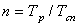
где 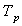
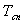
Лифт для транспортирования пожарных подразделений может быть использован для спасения инвалидов во время пожара.
Б.2. Расчетное
время спасения  определяется по формуле:
определяется по формуле:
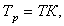
где Т - время кругового рейса лифта при спасении инвалидов, с, определяемое по формуле (Б.3);
К - расчетное число рейсов, необходимое для спасения инвалидов, определяемое по формуле (Б.4),
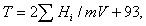
где 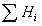
m - число этажей, с которых будет проводиться спасение инвалидов;
V - номинальная скорость лифта, м/с;
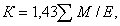
где - суммарное количество инвалидов и сопровождающих их людей, чел., приведенное в задании на проектирование;
Е - номинальная вместимость лифта, чел.
ПРИЛОЖЕНИЕ В
(обязательное)
МАТЕРИАЛЫ К РАСЧЕТУ УРОВНЯ ПОЖАРНОЙ БЕЗОПАСНОСТИ МАЛОМОБИЛЬНЫХ ГРУПП НАСЕЛЕНИЯ
При использовании приложения 2 ГОСТ 12.1.004 (раздел 2 «Основные расчетные зависимости») для учета специфики передвижения МГН по путям эвакуации следует применять дополнительные расчетные значения параметров движения МГН.
В.1. По мобильным качествам людей в потоке эвакуирующихся из зданий и сооружений следует подразделять на 4 группы согласно таблице В.1.
|
Группы мобильности |
Общие характеристики |
Средняя площадь горизонтальной проекции людей |
|
М1 |
Люди, не имеющие ограничений по мобильности, в том числе с дефектами слуха |
0,1 |
|
М2 |
Немощные люди, мобильность которых снижена из-за старения организма (инвалиды по старости); инвалиды на протезах; инвалиды с недостатками зрения, пользующиеся белой тростью; люди с психическими отклонениями |
0,2 |
|
МЗ |
Инвалиды, использующие при движении дополнительные опоры (костыли, палки) |
0,3 |
|
М4 |
Инвалиды, передвигающиеся на креслах-колясках, приводимых в движение вручную |
0,96 |
В.2. Расчетные значения скорости и интенсивности движения потоков людей с различной группой мобильности следует определять по формулам:
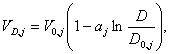
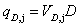
где 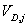 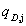
D - плотность людского потока на участке эвакуационного пути, м2/м2;
D0,j - значение плотности людского потока на j-м виде пути, при достижении которого плотность потока начинает оказывать влияние на скорость движения людей в потоке;
 - среднее значение
скорости свободного движения людей по j -му виду
пути при значениях плотности потока D £ D0,j ;
- среднее значение
скорости свободного движения людей по j -му виду
пути при значениях плотности потока D £ D0,j ;
aj - коэффициент, отражающий степень влияния плотности людского потока на его скорость при движении по j -му виду пути.
Значения D0,j,
 , aj для потоков людей
различных групп мобильности для формул
(В.1) и (В.2) приведены в таблице В.2.
, aj для потоков людей
различных групп мобильности для формул
(В.1) и (В.2) приведены в таблице В.2.
|
Группы мобильности |
Значения параметров |
Величина параметров по видам пути (j) |
||||
|
горизонтальный |
лестница вниз |
лестница вверх |
пандус вниз |
пандус вверх |
||
|
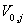 |
100 |
100 |
60 |
115 |
80 |
|
|
М1 |
D0,j |
0,051 |
0,089 |
0,067 |
0,171 |
0,107 |
|
aj |
0,295 |
0,400 |
0,305 |
0,399 |
0,399 |
|
|
|
30 |
30 |
20 |
45 |
25 |
|
|
М2 |
D0,j |
0,135 |
0,139 |
0,126 |
0,171 |
0,146 |
|
aj |
0,335 |
0,346 |
0,348 |
0,438 |
0,384 |
|
|
|
70 |
20 |
25 |
105 |
55 |
|
|
М3 |
D0,j |
0,102 |
0,208 |
0,120 |
0,122 |
0,136 |
|
aj |
0,350 |
0,454 |
0,347 |
0,416 |
0,446 |
|
|
|
60 |
- |
- |
115 |
40 |
|
|
М4 |
D0,j |
0,135 |
- |
- |
0,146 |
0,150 |
|
aj |
0,400 |
- |
- |
0,424 |
0,420 |
|
В.З. При движении людских потоков с участием МГН на участках пути перед проемами не следует допускать образования плотности потоков выше 0,5. При этом расчетные максимальные значения интенсивности движения qmax через проем различных групп мобильности следует принимать равными: М1 - 19,6 м/мин, М2 - 9,7 м/мин, М3 - 17,6 м/мин, М4 - 16,4 м/мин.
Ключевые слова: маломобильные группы населения, доступность, адаптация, безопасность среды жизнедеятельности